Visual diagnostics for multiply imputed values
Yongshi Deng
2023-02-02
Source:vignettes/web/Visual-diagnostics.Rmd
Visual-diagnostics.Rmd1. Introduction
It is important to assess the plausibility of imputations before
doing analysis. The mixgb package provides several visual
diagnostic functions using ggplot2 to compare multiply
imputed values versus observed data.
1.1 Inspecting imputed values
We will demonstrate these functions using the
nhanes3_newborn dataset. In the original data, almost all
missing values occurred in numeric variables. Only seven observations
are missing in the binary factor variable HFF1 .
library(mixgb)
colSums(is.na(nhanes3_newborn))
#> HSHSIZER HSAGEIR HSSEX DMARACER DMAETHNR DMARETHN BMPHEAD BMPRECUM
#> 0 0 0 0 0 0 124 114
#> BMPSB1 BMPSB2 BMPTR1 BMPTR2 BMPWT DMPPIR HFF1 HYD1
#> 161 169 124 167 117 192 7 0In order to visualize some imputed values for other types of
variables, we create some extra missing values in HSHSIZER
(integer), HSAGEIR (integer), HSSEX (binary
factor), DMARETHN (multiclass factor) and HYD1
(Ordinal factor) under MCAR.
withNA.df <- createNA(data = nhanes3_newborn, var.names = c("HSHSIZER", "HSAGEIR", "HSSEX", "DMARETHN", "HYD1"), p = 0.1)
colSums(is.na(withNA.df))
#> HSHSIZER HSAGEIR HSSEX DMARACER DMAETHNR DMARETHN BMPHEAD BMPRECUM
#> 211 211 211 0 0 211 124 114
#> BMPSB1 BMPSB2 BMPTR1 BMPTR2 BMPWT DMPPIR HFF1 HYD1
#> 161 169 124 167 117 192 7 211We then impute this dataset using mixgb with default
settings. A list of five imputed datasets are assigned to
imputed.data. The dimension of each imputed dataset will be
the same as the original data.
imputed.data <- mixgb(data = withNA.df, m = 5)We can check the actual imputed values of a single variable using the
function show_var(). It will return a data.table of
m columns, each column contains one set of imputed values
for the specified variable. Only the imputed values of missing entries
will be shown.
show_var(imputation.list = imputed.data, var.name = "BMPHEAD", original.data = withNA.df)
#> m1 m2 m3 m4 m5
#> 1: 43.8 44.4 43.7 49.3 43.8
#> 2: 42.0 42.7 41.7 41.0 41.6
#> 3: 42.1 44.6 43.9 45.1 44.6
#> 4: 44.6 44.5 44.2 44.6 42.0
#> 5: 46.1 48.1 46.0 45.3 44.3
#> ---
#> 120: 46.1 45.4 45.3 45.9 46.1
#> 121: 46.3 44.9 45.0 45.0 46.1
#> 122: 39.5 41.7 41.3 41.0 39.9
#> 123: 42.5 42.3 43.0 42.7 42.4
#> 124: 44.8 45.2 43.8 46.4 45.5
show_var(imputation.list = imputed.data, var.name = "HFF1", original.data = withNA.df)
#> m1 m2 m3 m4 m5
#> 1: 2 2 2 2 2
#> 2: 1 1 1 1 1
#> 3: 2 2 2 2 2
#> 4: 1 1 1 1 1
#> 5: 2 1 1 1 1
#> 6: 2 2 2 2 2
#> 7: 2 2 2 2 22 Visual diagnostics plots
The mixgb package provides the following visual
diagnostics functions:
Single variable:
plot_hist(),plot_box(),plot_bar();Two variables:
plot_2num(),plot_2fac(),plot_1num1fac();Three variables:
plot_2num1fac(),plot_1num2fac().
Each function will return m+1 panels to compare the
observed data with m sets of actual imputed values.
2.1 Single variable
Only the imputations of missing entries in the specified variable
will be ploted in panels m1 to m5. If a
variable is fully observed, it will return an error.
2.1.1 Numeric
We can plot an imputed numeric variable by histogram or boxplot.
-
plot_hist(): plot histograms with density curves.Histograms are good at displaying the distribution of numeric data. Users can identify any unusual pattern of the imputed values from their shapes. Under MCAR, we would expect the distribution of imputed values to be the same as that of the observed ones. Under MAR, the distributions of observed and imputed values can be quite different. However, it is still worth plotting the imputed data as any to odd values may indicate that the imputation procedure is unsatisfactory.
plot_hist(imputation.list = imputed.data, var.name = "BMPHEAD", original.data = withNA.df)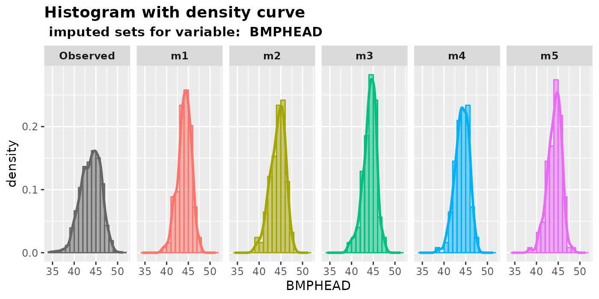
-
plot_box(): plot box plots with overlaying data points.Users can use
plot_box()to compare the median, lower and upper quantiles of imputed values with that of the observed ones. Also, we can see the difference between the number of missing values and observed values in the specified variable.plot_box(imputation.list = imputed.data, var.name = "BMPHEAD", original.data = withNA.df)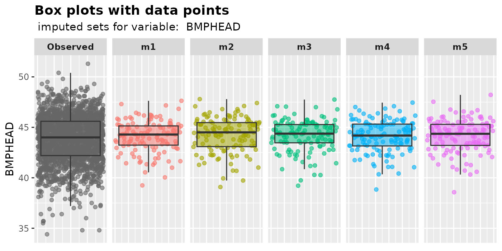
2.1.2 Factor
-
plot_bar(): plot bar plotsThe proportion of each level in a factor will be shown by
plot_bar().plot_bar(imputation.list = imputed.data, var.name = "HSSEX", original.data = withNA.df)
plot_bar(imputation.list = imputed.data, var.name = "DMARETHN", original.data = withNA.df)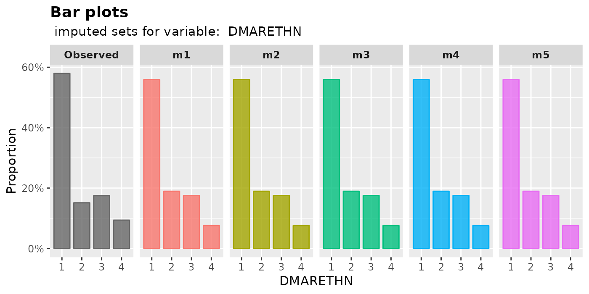
2.1.3 Integer
When producing a plot, an integer variable can be treated as either numeric or factor. Users can plot an imputed integer variable according to their preferences using the following functions:
plot_hist(): plot histograms with density curvesplot_box(): plot box plot with overlaying data points-
plot_bar(): plot bar plot (treat an integer variable as a factor)plot_hist(imputation.list = imputed.data, var.name = "HSHSIZER", original.data = withNA.df)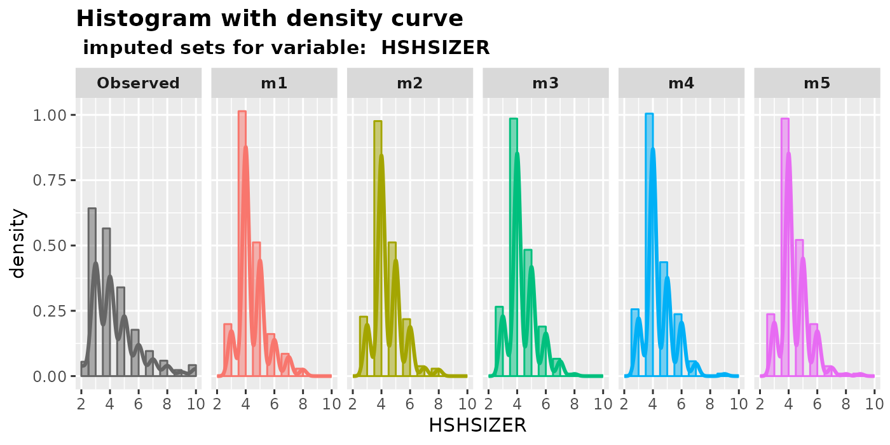
plot_box(imputation.list = imputed.data, var.name = "HSHSIZER", original.data = withNA.df)
plot_bar(imputation.list = imputed.data, var.name = "HSHSIZER", original.data = withNA.df)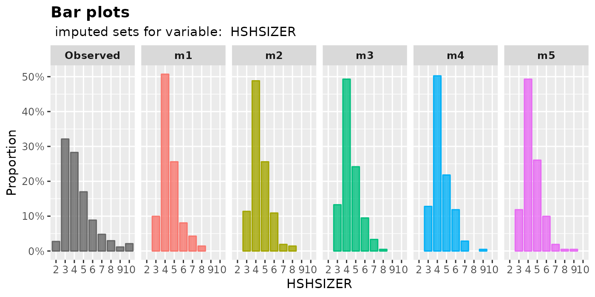
2.1.4 Ordinal factor
The function mixgb() will not convert any ordinal factor
to integers by default. So we can just plot ordinal factors as factors.
(see Section 2.1.2).
However, setting ordinalAsInteger = TRUE in
mixgb() may speed up the imputation process, but users need
to decide whether to transform them back. In this case, we can just plot
the imputed values as integers (see Section 2.1.3).
imputed.data2 <- mixgb(data = withNA.df, m = 5, ordinalAsInteger = TRUE)
plot_bar(imputation.list = imputed.data2, var.name = "HYD1",
original.data = withNA.df)
plot_hist(imputation.list = imputed.data2, var.name = "HYD1",
original.data = withNA.df)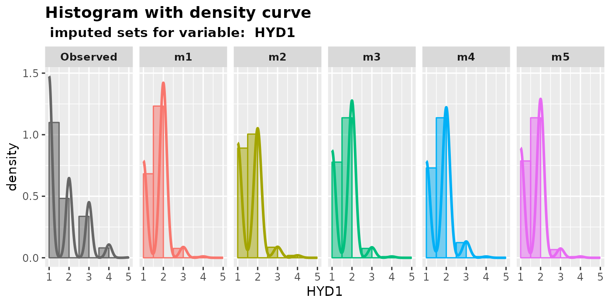
plot_box(imputation.list = imputed.data2, var.name = "HYD1",
original.data = withNA.df)
2.2 Two variables
To plot the multiply imputed values of two variables, at least one of
them has to be incomplete in the original data. In panels
m1 to m5, missing data either occurs in either
one of the variables.
2.2.1 Two numeric variables
We can plot scatter plots of two numeric variables using
plot_2num(). We can specify the name of a numeric variable
on the x-axis in var.x , and another numeric variable on
the y-axis in var.y.
Users can choose to plot the shapes of different types of missing
values by setting shape = TRUE. We only recommend plotting
the shapes when the dataset is small. By default,
shape = FALSE to speed up the plotting process.
plot_2num(imputation.list = imputed.data, var.x = "BMPHEAD", var.y = "BMPRECUM",
original.data = withNA.df, shape = TRUE)
NA.condition represents the following types of missing values.
both.observed: Bothvar.xandvar.yare observed. This only appears in the first panel -Observed(Shape: diamond).both.missing: Imputed values where bothvar.xandvar.yare originally missing (Shape: circle);var.x.missing: Imputed values wherevar.xis originally missing andvar.yisn’t (Shape: X);var.y.missing: Imputed values wherevar.yis originally missing andvar.xisn’t (Shape: Y).
2.2.2 One numeric vs one factor
We can plot a numeric variable versus a factor using
plot_1num1fac(). The output is a box plot with overlaying
points. Users need to specify a numeric variable in var.num
and a factor in var.fac.
NA.condition is similar to the definition in Section 2.2.1.
plot_1num1fac(imputation.list = imputed.data, var.num = "BMPHEAD", var.fac = "HSSEX",
original.data = withNA.df)
2.2.3 Two factors
We can plot bar plots to show the relationship between two factors
using plot_2fac(). Note that this function requires at
least one of the variables to be incomplete in the original dataset.
plot_2fac(imputation.list = imputed.data, var.fac1 = "HYD1", var.fac2 = "HFF1",
original.data = withNA.df)
2.2.4 One numeric vs one integer
We can use plot_2num() to plot a numeric variable versus
an integer variable. Note that the plots would look different if we swap
the variables var.x and var.y.
plot_2num(imputation.list = imputed.data, var.x = "BMPHEAD", var.y = "HSAGEIR",
original.data = withNA.df, shape = TRUE)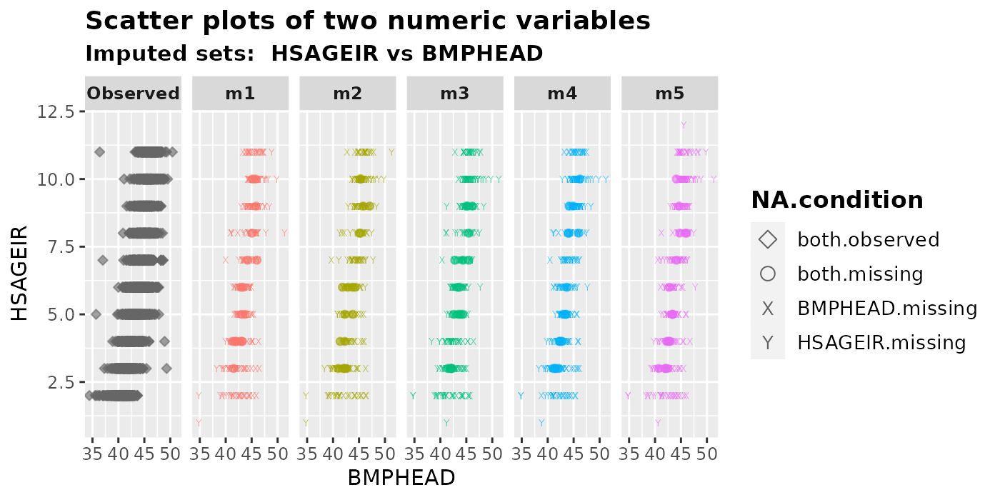
plot_2num(imputation.list = imputed.data, var.x = "HSAGEIR", var.y = "BMPHEAD",
original.data = withNA.df, shape = TRUE)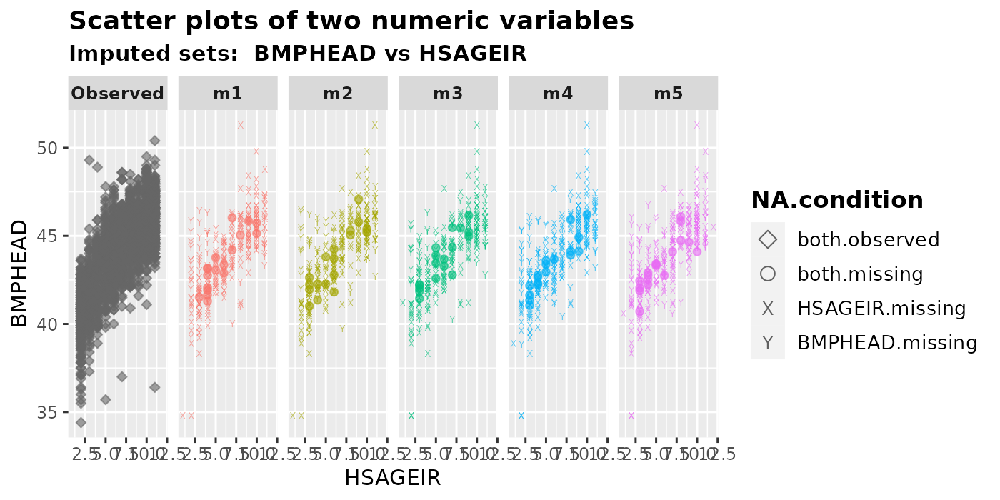
If we treat an integer variable as factor, we can use
plot_1num1fac() .
plot_1num1fac(imputation.list = imputed.data, var.num = "BMPHEAD", var.fac = "HSAGEIR",
original.data = withNA.df, shape = TRUE)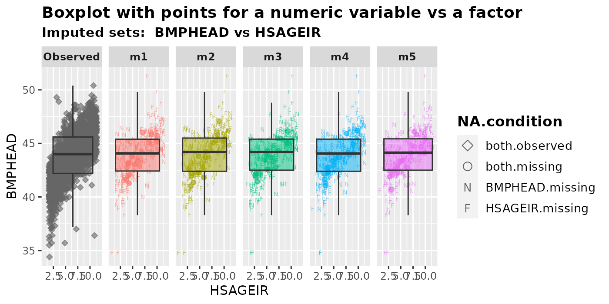
2.2.5 Two integers
We can plot two variables of integer type using either
plot_2num() ,plot_1num1fac() or
plot_2fac(). Users should choose the plotting functions
based on the nature of the variable. For example, if an integer variable
age has data ranging from 0 to 110, it may be easier to
treat age as numeric rather than a factor. On the other
hand, if we have an integer variable which only has several distinct
values (e.g. 1,2,3), it may be better to treat them as factor for
plotting. In this dataset, we only have two variables of integer
type-HSHSIZER(household size) and
HSAGEIR(baby’s age ranging from 2 to 11 months). We would
not expect any obvious relation between these two, but we plot them
anyway.
plot_2num(imputation.list = imputed.data, var.x = "HSHSIZER", var.y = "HSAGEIR",
original.data = withNA.df, shape = TRUE)
plot_1num1fac(imputation.list = imputed.data, var.num = "HSHSIZER", var.fac = "HSAGEIR",
original.data = withNA.df, shape = TRUE)
plot_2fac(imputation.list = imputed.data, var.fac1 = "HSHSIZER", var.fac2 = "HSAGEIR",
original.data = withNA.df)
2.3 Three variables
To plot the multiply imputed values of three variables, at least one of them has to be incomplete in the original data.
2.3.1 Two numeric variables conditional on one factor
We can generate a conditional scatter plots for two numeric variables
using plot_2num1fac() . The variable on the x-axis should
be specified in var.x, while the y-axis one should be in
var.y . The factor we want to be conditional on is
con.fac.
plot_2num1fac(imputation.list = imputed.data, var.x = "BMPHEAD", var.y = "BMPRECUM",
con.fac = "HFF1", original.data = withNA.df)
When we have three variables, there are \(2^3\) different types of missing patterns,
consisting of all possible combinations of zero to three variables
missing. However, it would be hard to differentiate all 8 types of
missingness in the same plots, especially in the case when the dataset
is not small. Therefore, we only choose to show the following three
types in NA.condition in the plot when
shape = TRUE.
NA.condition represents the following types of missing values.
all.observed: Observations where all three variables are observed. This only appears in the first panel -Observed.-
con.fac.observed: Imputed values wherecon.facis originally observed.(These points are originally missing in either
var.xorvar.yor both) con.fac.missing: imputed values wherecon.facis originally missing. (These points can be originally observed, or missing in eithervar.xorvar.yor both)
plot_2num1fac(imputation.list = imputed.data, var.x = "BMPHEAD", var.y = "BMPRECUM",
con.fac = "DMARETHN", original.data = withNA.df, shape = TRUE)
If we want to treat integer variables as numeric, we can put them in
either var.x or var.y. Here is an example,
where HSAGEIR is an integer variable with values ranging
from 2 to 11.
plot_2num1fac(imputation.list = imputed.data, var.x = "HSAGEIR", var.y = "BMPRECUM",
con.fac = "DMARETHN", original.data = withNA.df)
2.3.2 One numeric variable and one factor conditional on another factor
plot_1num2fac() will generate boxplots with overlaying
data points of one numeric variable vs a factor, conditional on another
factor.
plot_1num2fac(imputation.list = imputed.data, var.fac = "DMARETHN", var.num = "BMPRECUM",
con.fac = "HSSEX", original.data = withNA.df)
3 Color options
By default, the observed panel is gray and the other m
panels use ggplot2’s default color scheme.
plot_2num(imputation.list = imputed.data, var.x = "BMPHEAD", var.y = "BMPRECUM",
original.data = withNA.df, color.pal = NULL)
We can change the colors by providing a vector of color hex codes in
the argument color.pal. For example, we can use one of the
colorblind-friendly palette Set2 from the R package
RColorBrewer. Note that if we have m imputed
datasets, we need m+1 hex codes because we also have to
display the Observed panel.
library(RColorBrewer)
color.codes <- brewer.pal(n = 6, name = "Set2")
color.codes
#> [1] "#66C2A5" "#FC8D62" "#8DA0CB" "#E78AC3" "#A6D854" "#FFD92F"
plot_2num(imputation.list = imputed.data, var.x = "BMPHEAD", var.y = "BMPRECUM",
original.data = withNA.df, color.pal = color.codes)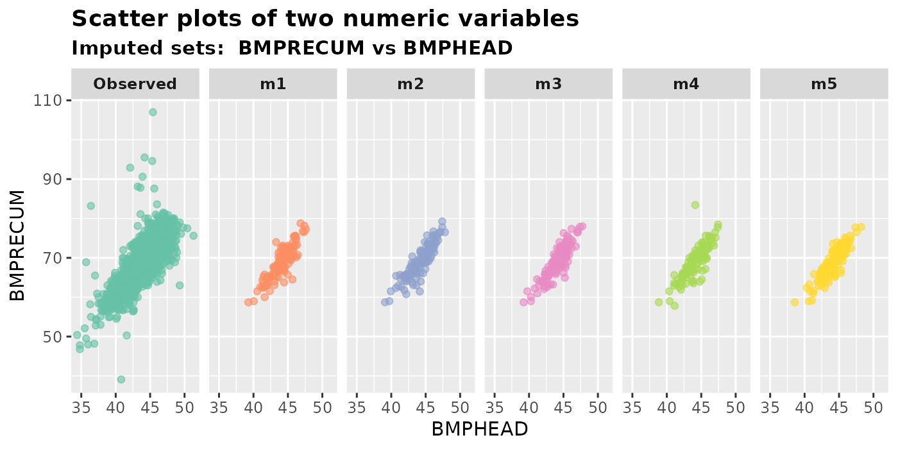
Otherwise, we can provide a vector of R’s built-in color names.
color.names <- c("gray50", "coral2", "goldenrod3", "darkolivegreen4", "slateblue1", "plum3")
plot_2num(imputation.list = imputed.data, var.x = "BMPHEAD", var.y = "BMPRECUM",
original.data = withNA.df, color.pal = color.names)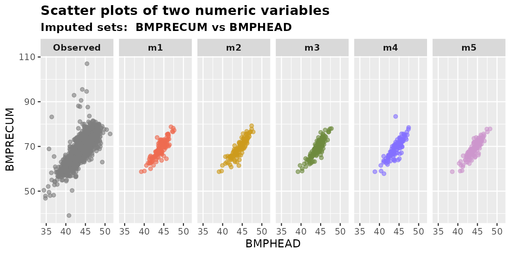
Here is a very useful R colors names cheat-sheet created by Dr Ying Wei.
4 Plot multiply imputed data from other packages
We can also plot multiply imputed datasets obtaining from other
packages, such as mice. Here is an example using the
nhanes2 data from mice.
Note that this dataset is quite small, only has 25 rows and 4 columns
(age, bmi, hyp and
chl). There are only 9, 8 and 10 missing values in the
variables bmi, hyp and chl
respectively. Imputed values are volatile when the dataset is small.
library(mice)
dim(nhanes2)
#> [1] 25 4
colSums(is.na(nhanes2))
#> age bmi hyp chl
#> 0 9 8 10
imp <- mice(data = nhanes2, m = 5, printFlag = FALSE)
mice.data <- complete(imp, action = "all")
plot_hist(imputation.list = mice.data, var.name = "bmi", original.data = nhanes2)
plot_box(imputation.list = mice.data, var.name = "chl", original.data = nhanes2)
plot_bar(imputation.list = mice.data, var.name = "hyp", original.data = nhanes2)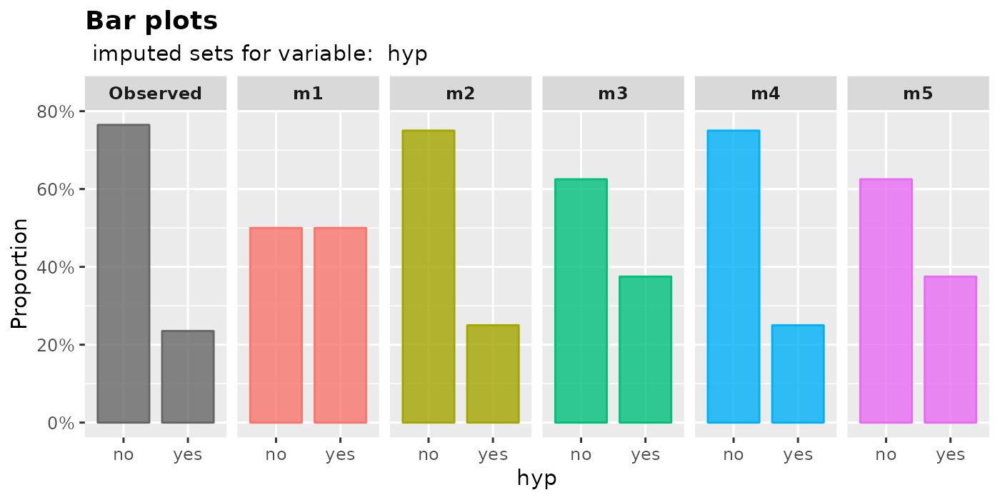
plot_2num(imputation.list = mice.data, var.x = "bmi", var.y = "chl",
original.data = nhanes2)
plot_1num1fac(imputation.list = mice.data, var.num = "chl", var.fac = "hyp",
original.data = nhanes2)
plot_2num1fac(imputation.list = mice.data, var.x = "chl", var.y = "bmi",
con.fac = "age", original.data = nhanes2)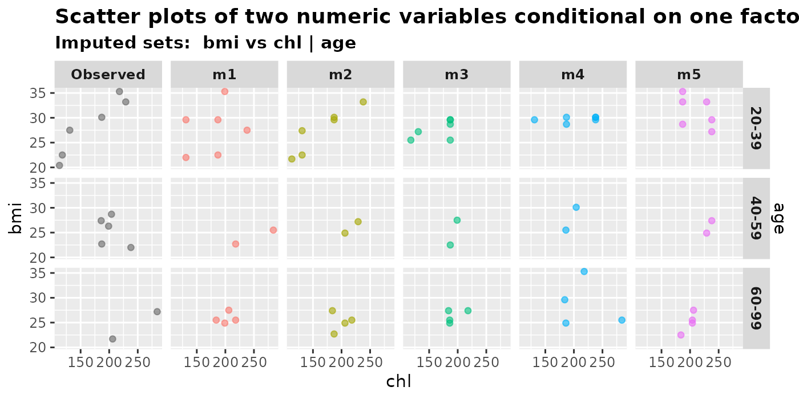
plot_2num1fac(imputation.list = mice.data, var.x = "chl", var.y = "bmi",
con.fac = "hyp", original.data = nhanes2)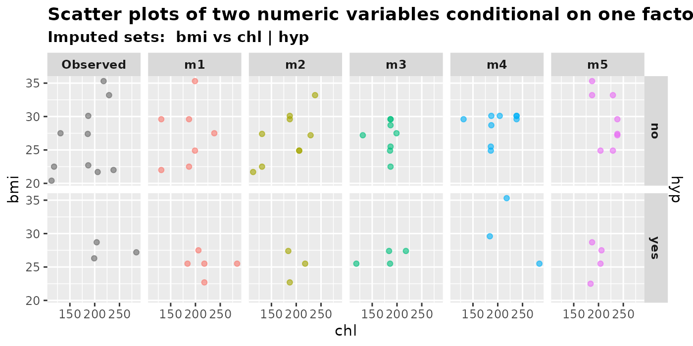
5 Plot against masked true values
In general, we wouldn’t know the true values of the missing data, so we can only plot the imputed values versus the observed data. However, if we happen to know the true value, we can compare the imputed values with them.
Let’s generate a simple dataset full.df and create 30%
missing values in variable norm1 and norm2. We
then impute MCAR.df using mixgb().
N <- 1000
norm1 <- rnorm(n = N, mean = 1, sd = 1)
norm2 <- rnorm(n = N, mean = 1, sd = 1)
y <- norm1 + norm2 + norm1 * norm2 + rnorm(n = N, mean = 0, sd = 1)
full.df <- data.frame(y = y, norm1 = norm1, norm2 = norm2)
MCAR.df <- createNA(data = full.df, var.names = c("norm1", "norm2"), p = c(0.3, 0.3))
mixgb.data <- mixgb(data = MCAR.df, m = 5, nrounds = 10)Now since we know the true data, we can specify it in the plotting
functions. It will generate an extra panel called
MaskedTrue, which shows values that are originally observed
but intentionally made missing.
plot_hist(imputation.list = mixgb.data, var.name = "norm1",
original.data = MCAR.df, true.data = full.df)
plot_box(imputation.list = mixgb.data, var.name = "norm2",
original.data = MCAR.df, true.data = full.df)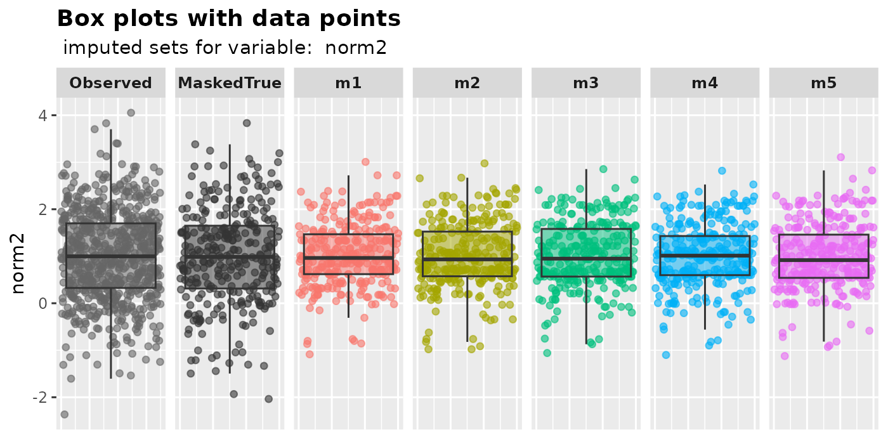
plot_2num(imputation.list = mixgb.data, var.x = "norm1", var.y = "y",
original.data = MCAR.df, true.data = full.df)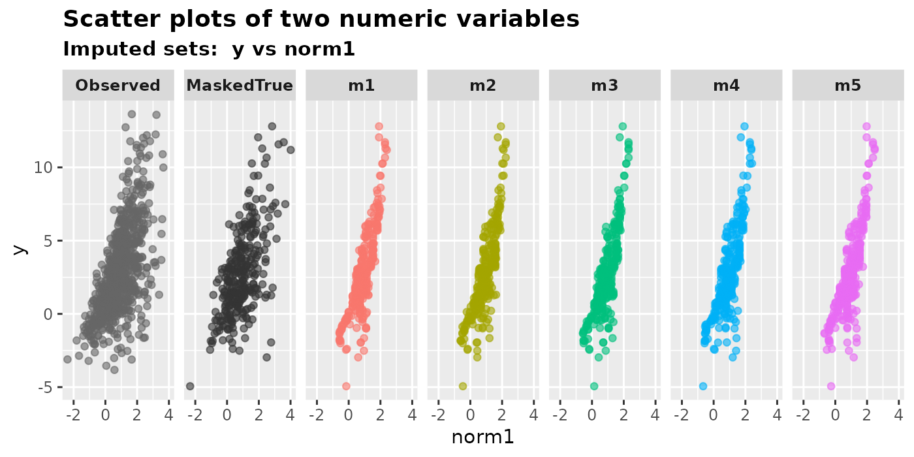